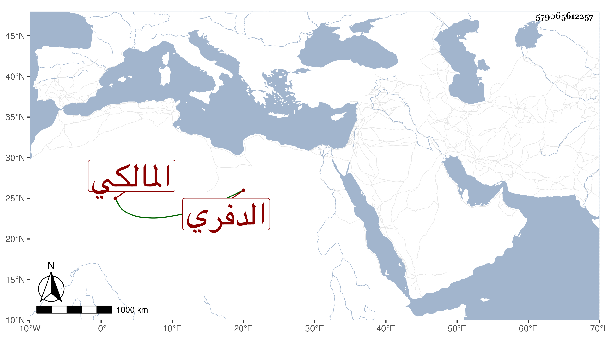

0902Sakhawi.DawLamic.ITO20230111-ara1.EIS1600.579065612257
Biography ID: 579065612257
إبراهيم بن محمد بن أحمد بن عبدا لله بن عبد الرحمن بن عبد القادر الدفري المالكي الآتي أبوه والمذكور جده في أهل القرن الثامن . ولد في أول المحرم سنة سبع عشرة وثمانمائة وحفظ الرسالة وعرضها على جماعة كشيخنا وأجاز له هو والولي العراقي بل سمع على الولي في أملية ... وغيرها وتفقه بالزين بن طاهر ودرس بعد أبيه بالناصرية الحسنية وبمدرسة أم السلطان وتكسب قليلا بالشهادة وولي عقود الأنكحة ثم ترك ذلك بل ونزل عن وظيفته وانجمع بالطويلية من الصحراء وشرح الرسالة في مجلد وابن الحاجب الفرعي في خمس وعلق من الفوائد غير ذلك ولم يزل على طريقته حتى مات في سادس رمضان سنة سبع وسبعين ودفن عند جده بالقرب من الطويلية وهو خال البدر ابن صاحبنا الشيخ بهاء الدين المشهدي فأمه آسية أخت إبراهيم .
